특수용접기능사 (2001-04-29 기출문제)
1과목: 용접일반
1. 전격방지기의 기능은 작업을 하지 않을 때, 보조전압기에 의해 용접기의 2차 무부하 전압을 약 몇 V 이하로 유지시켜야 되는가?
- 75 V
- 55 V
- 45 V
- 25 V
(정답률: 65%)

2. 용접중의 작업 검사로서 해야 되는 검사 사항으로 옳은 것은?
- 각층마다의 융합상태
- 용접조건, 예열, 후열등의 처리
- 용접공의 기량
- 홈각도, 루우트간격, 이음부의 표면상황
(정답률: 44%)
3. 교류용접기의 규격은 무엇으로 정하는가?
- 입력 정격 전압
- 입력 소모 전압
- 정격 1차 전류
- 정격 2차 전류
(정답률: 68%)
4. 아크용접시 피복 아크용접봉의 사용전류의 종류를 설명한 것이다. 잘못 설명된 것은?
- AC : 교류
- ACHF : 고주파 교류
- DC(-) : 직류 용접봉 음극
- DC(±) : 직류 정극성 및 역극성
(정답률: 21%)
5. 불활성 가스가 아닌 것은?
- CO2
- Ar
- Ne
- He
(정답률: 30%)
6. 자기 감응도가 크고, 잔류자기 및 항자력이 작으므로, 변압기의 철심이나 교류기계의 철심등에 쓰이는 강은?
- 텅스텐강
- 코발트강
- 규소강
- 크롬강
(정답률: 23%)
7. 현미경 시험을 하기 위해서 각금속에 사용되는 부식제이다. 철강용에 해당되는 것은?
- 왕수 알코올액, 구리, 구리합금용 염화철액, 염화암모늄액
- 플루오르화 수소액, 수산화나트륨, 수산화칼륨액
- 피크르산 알코올용액(피크르산 4g, 알코올 100㏄)
- 과황산 암모늄액(과황산암모늄 10g, 염화암모늄 3g, 물 20㏄)
(정답률: 22%)
8. 피복 아크 용접으로 용접하지 않는 금속은 어느 것인가?
- 저탄소강
- 마그네슘 합금
- 탄소강
- 고 니켈합금
(정답률: 15%)
9. 특수강에서 뜨임취성이 가장 많이 나타나는 강종은?
- Si강
- Cr강
- Ni – Cr강
- Ni - Mo강
(정답률: 24%)
10. 용접부의 시험 및 검사의 분류에서 수소 시험은 무슨 시험에 속하는가?
- 기계적 시험
- 낙하 시험
- 화학적 시험
- 압력 시험
(정답률: 66%)
11. 보스에서 어느각도만큼 암이 나와 있는 경우 그 부분을 투상면에 평행한 위치까지 회전시켜 실제길이가 나타날 수 있도록 그린 투상도은?
- 상관 투상도
- 평행 투상도
- 회전 투상도
- 복각 투상도
(정답률: 62%)
12. 다음 KS 용접도시기호의 설명으로 틀린 것은?
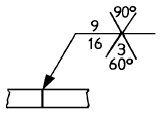
- 화살표 쪽 홈의 각도는 90°이다.
- 루트 간격은 3 mm 이다.
- X 형 홈 용접이다.
- 화살표쪽 홈 깊이가 16 mm 이다.
(정답률: 36%)
13. 일반적인 전기회로는 옴의 법칙에 의해 동일한 저항에 흐르는 전류는 그 전압에 비례하지만 낮은 전류에서 아크의 경우는 반대로 전류가 크게되면 저항이 작아져서 전압도 낮아진다. 이러한 현상을 아크의 무슨 특성이라 하는가?
- 전압회복특성
- 절연회복특성
- 부특성
- 상승특성
(정답률: 27%)
14. TIG 절단에 대한 설명 중 틀린 것은?
- 금속 재료의 절단에만 사용한다.
- 열효율이 좋으며 고능률적이다.
- 모재와 전극간에 방전하여 절단한다.
- 아크 냉각용 가스는 아르곤과 수소의 혼합가스를 사용한다.
(정답률: 17%)
15. 전극봉을 직접 용가재로 사용하지 않는 것은?
- MIG 용접
- TIG 용접
- 서브머지드 아크 용접
- 피복 아크 용접
(정답률: 28%)
16. 납땜이나 가스 절단 등에 사용되는 가스가 아닌 것은?
- 천연가스
- 부탄가스
- 도시가스
- 티탄가스
(정답률: 22%)
17. 교류아크 용접기의 2차측 무부하전압은 다음 중 몇 V 정도인가?
- 40 – 60
- 70 - 80
- 80 – 90
- 90 - 100
(정답률: 8%)
18. 용접속도와 뒤틀림의 관계중 가장 옳은 것은?
- 용접진행속도가 느릴수록 뒤틀림이 적어진다.
- 용접진행속도가 빠를수록 뒤틀림이 적어진다.
- 용접진행속도와 뒤틀림과는 관계가 없다.
- 용접봉이 충분히 녹아 용착된 후, 용접진행 속도를 서서히 이동하면 뒤틀림이 적어진다.
(정답률: 29%)
19. 구리합금에 대한 가스용접 방법으로 틀린 것은?
- 장치가 간단하다.
- 변형이 작다.
- 얇은판에 적당하다.
- 황동 용접이 가능하다.
(정답률: 34%)
20. 직류 아크용접에서 용접봉의 용융이 늦고, 모재의 용입이 깊어지는 극성은?
- 직류 정극성
- 직류 역극성
- 용극성
- 비용극성
(정답률: 9%)
21. 보기와 같은 용접부의 비파괴 시험기호에 대한 설명으로 틀린 것은?
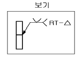
- 방사선 투과시험이다.
- 부분(샘플링)시험이다.
- 이중벽 촬영의 시험이다
- 화살표 반대쪽 V홈을 용접한 용접부 시험이다.
(정답률: 16%)
22. 맞대기 용접이음에서 홈의 루트 간격은 중요하다. 특히 서브머지드 아크 용접의 경우는 잘못하면 용락이 되기 쉬우므로 이를 제한하는데 어느 정도로 하는가?
- 0.8mm이하
- 1.0mm이하
- 1.2mm이하
- 1.5mm이하
(정답률: 21%)
23. AC(교류)와 D.C.S.P(직류정극성) 및 D.C.R.P(직류역극성)전원의 용입 깊이 크기의 순서가 맞는 것은?
- D.C.R.P ＜ D.C.S.P ＜ AC
- D.C.S.P ＜ D.C.R.P ＜ AC
- D.C.S.P ＜ AC ＜ D.C.R.P
- D.C.R.P ＜ AC ＜ D.C.S.P
(정답률: 45%)
24. 실제의 길이가 120 mm 일 때 척도 1/2 인 도면에는 치수가 얼마로 기입되어 있는가?
- 30
- 60
- 120
- 240
(정답률: 49%)
25. 가스 용접에 이용되는 아세틸렌 가스에 대하여 옳게 설명한 것은?
- 아세틸렌 가스의 자연 폭발 온도는 406∼408℃이다.
- 아세틸렌 가스는 공기중에 3∼4%정도 포함될 때 가장 위험하다.
- 아세틸렌 가스 1리터의 무게는 1기압 15℃에서 1.176g이다.
- 아세틸렌 발생기에서 1.3기압 이하의 가스를 발생시켜서는 안된다.
(정답률: 50%)
26. 공업용 알루미늄(고순도 : 99.99%)의 비중(20℃)은 다음 중 어느 것인가?
- 2.699
- 3.541
- 4.697
- 5.432
(정답률: 12%)
27. 서브머지드 아크용접에서 용제를 사용하는 경우, 용제의 작용이 되지 못하는 것은?
- 누전방지
- 용입의 용이
- 능률적인 용접작업
- 열에너지의 발산방지
(정답률: 63%)
28. 수소(H2)는 4.0∼75.0[%]의 연소범위를 갖는데 수소와 공기의 혼합가스 100리터 중 공기가 몇 리터일 때 점화원에 의하여 연소되는가?
- 4 ∼ 1
- 75 ∼ 4
- 96 ∼ 25
- 100 ∼ 75
(정답률: 44%)
29. 용접기를 사용할 때에 지켜야 할 사항이다. 맞지 않는 것은?
- 정격 이상으로 사용하면 과열되어 소손이 생긴다.
- 탭 전환은 반드시 아크를 중지시킨 후에 시행한다.
- 1차측 탭은 2차측 무부하 전압을 높이거나 용접전류를 올리는데 사용한다.
- 2차측 단자의 한쪽과 용접기 케이스는 반드시 접지를 확실히 해야 한다.
(정답률: 29%)
30. 다음 그림에서 루트 간격(root opening)을 표시하는 것은?
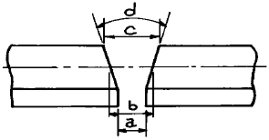
- a
- b
- c
- d
(정답률: 74%)
31. KS "기계제도"규격에서 정한 가는선:굵은선:아주 굵은선의 비율로 다음 중 가장 적합한 것은?(오류 신고가 접수된 문제입니다. 반드시 정답과 해설을 확인하시기 바랍니다.)
- 1 : 1.5 : 2
- 1 : 2 : 4
- 1 : 2.5 : 5
- 1 : 3 : 9
(정답률: 40%)
32. 아세틸렌 발생기를 사용한 가스용접에서 산소가 아세틸렌호스를 통하여 발생기로 역류하는 것을 막아 아세틸렌 발생기의 폭발을 방지하는 것은?
- 청정기
- 안전기
- 압력 조정기
- 도관
(정답률: 49%)
33. 탄소 함유량이 4.30∼6.67%인 주철은?
- 과공정 주철
- 과공석 주철
- 아공정 주철
- 아공석 주철
(정답률: 38%)
34. 플라즈마 아크 용접장치에서 아크 플라즈마의 냉각가스로 쓰이는 것은?
- 아르곤 + 수소의 혼합가스
- 아르곤 + 산소의 혼합가스
- 아르곤 + 질소의 혼합가스
- 아르곤 + 공기의 혼합가스
(정답률: 26%)
35. 황동에 니켈을 10 - 20% 첨가한 것으로 전기저항이 높고 내열, 내식성이 좋으므로 일반 전기 저항체로 사용되며, 주조된 상태에서는 밸브, 콕, 장식품, 악기등에 사용되는 것은?
- 포금
- 양은
- 톰백
- 켈멧
(정답률: 21%)
2과목: 용접재료
36. 다음 중 둥근 머리 리벳의 공장 리벳이음 작업을 나타내는 것은?
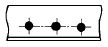
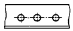
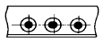
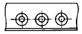
(정답률: 40%)
37. 연강판 두께 25.4mm일 때, 표준 드랙길이(drag length)로 가장 적합한 것은?
- 2.4mm
- 5.1mm
- 10.2mm
- 25.4mm
(정답률: 41%)
38. 피복아크 용접봉에서 심선지름 8mm 이하를 사용할 경우 심선길이의 허용오차는 몇 mm로 유지해야 하는가?
- ±0.3
- ±1
- ±3
- ±5
(정답률: 15%)
39. 강의 탈산제로 적당하지 않은 것은?
- 페로 - 실리콘(Fe - Si)
- 알루미늄(Al)
- 페로 - 망간(Fe - Mn)
- 페로 - 니켈(Fe - Ni)
(정답률: 14%)
40. 융접에 해당하는 용접법은?
- 초음파용접
- 연납땜
- 업셋맞대기용접
- 일렉트로슬랙용접
(정답률: 27%)
41. 산소와 혼합하였을 때 불꽃의 최고온도가 가장 낮은 가스는?
- 메탄
- 수소
- 프로판
- 아세틸렌
(정답률: 36%)
42. 알곤(Ar)가스는 일반적으로 용기에 몇 기압(kgf/㎝2)으로 충전하는가?
- 약 80
- 약 100
- 약 140
- 약 250
(정답률: 22%)
43. 다음 중 스테인레스강 용접시 용입은 얕으나 작업성이 우수한 피복아크 용접봉은?
- 저수소계
- 철분산화철계
- 티탄계
- 고셀룰로스계
(정답률: 12%)
44. 보기와 같은 원뿔을 축선과 평행인 X - X 평면으로 절단했을 때 생기는 원뿔곡선은 무엇인가?
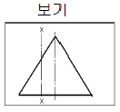
- 타원
- 진원
- 쌍곡선
- 사이클로이드곡선
(정답률: 37%)
45. 피복아크 용접에서 직류 정극성의 성질로서 옳은 것은?(오류 신고가 접수된 문제입니다. 반드시 정답과 해설을 확인하시기 바랍니다.)
- 용접봉의 용융속도가 빠르므로 모재의 용입이 깊게 된다.
- 용접봉의 용융속도가 빠르므로 모재의 용입이 얕게 된다.
- 모재쪽의 용융속도가 빠르므로 모재의 용입이 깊게 된다.
- 모재쪽의 용융속도가 빠르므로 모재의 용입이 얕게 된다.
(정답률: 14%)
46. 다음 중 알루미나(Al2O3)의 물리적 성질로 맞는 것은?
- 용융점 2⑤0℃, 비중 4
- 용융점 660℃, 비중 2.7
- 용융점 2454℃, 비중 4
- 용융점 650 ℃, 비중 1.74
(정답률: 6%)
47. 가스 용접 작업 중 불꽃에 산소의 양이 많을 때 나타나는 현상은?
- 아세틸렌의 소비가 과다해진다.
- 용접부에 기공이 발생한다.
- 용접봉의 소비가 적게 된다.
- 용제의 사용이 필요없게 된다.
(정답률: 28%)
48. 보기 투상도의 평면도와 우측면도에 가장 적합한 정면도는?
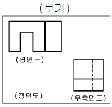
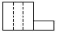
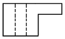
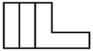
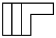
(정답률: 19%)
49. 엘렉트론은 Mg과 무엇의 합금인가?
- Al
- Al, Zn
- Al, Zn, Th
- Ce, Sn
(정답률: 30%)
50. 입체도를 3각법으로 그린 다음 투상도에 관한 설명으로 올바른 것은?
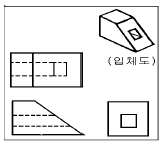
- 정면도만 틀림
- 평면도만 틀림
- 우측면도만 틀림
- 모두 올바름
(정답률: 24%)
3과목: 기계제도
51. 35℃에서 150기압으로 압축하여 내부용적 40.7리터의 산소 용기에 충전하였을 때, 용기속의 산소량은 몇 리터인가?
- 41⑤
- 5210
- 61⑤
- 7210
(정답률: 8%)
52. 가스용접 작업시 일반적으로 용제(flux)를 사용하지 않아도 좋은 금속은?
- 주철
- 알루미늄
- 연강
- 구리합금
(정답률: 12%)
53. 수중절단시 토치를 수중에 넣기전에 보조팁에 점화를 하기 위해 가장 적합한 연료가스는?
- 수소
- 아세틸렌
- 프로판
- 벤젠
(정답률: 7%)
54. 주철의 장점으로 옳지 않은 것은?
- 주조성이 우수하며, 크고 복잡한 것도 제작할 수 있다.
- 인장강도, 휨 강도 및 충격값은 크나, 압축강도는 작다.
- 금속재료 중에서 단위 무게당의 값이 싸다.
- 주물의 표면은 굳고 녹이 잘 슬지 않으며 또 칠도 잘 된다.
(정답률: 24%)
55. 변압기 철심에 쓰이는 강은?
- Mo강
- Cr강
- Ni강
- Si강
(정답률: 18%)
56. 도면에서 "5 - 7 드릴" 이라고 기입되어 있는 경우 설명으로 가장 적합한 것은?
- 지름이 7 mm 되는 드릴로 구멍을 5 개 뚫는다.
- 지름이 5∼7 mm 되는 구멍을 드릴로서 뚫는다.
- 지름이 5 mm 되는 드릴로 구멍을 깊이가 7 mm 되게 뚫는다.
- 지름이 7 mm 되는 드릴로 깊이가 5 mm 되게 뚫는다.
(정답률: 35%)
57. 아크 용접기의 용량은 무엇으로 정하는가?
- 정격2차 전류
- 개로전압
- 정격사용율
- 최고 2차 무부하 전압
(정답률: 19%)
58. 다음 중 용융점이 가장 낮은 것은?
- Fe
- Pb
- Zn
- Sn
(정답률: 17%)
59. 탄소강중에 함유되어 있는 대표적인 5원소는?
- Mn, S, P, H2, Si
- C, P, S, Si, Mn
- Si, C, Ni, Cr, Mo
- P, S, Si, Ni, O2
(정답률: 20%)
60. 용접용 가스의 구비조건에 대한 설명으로 옳지 않은 것은?
- 연소온도가 높을 것
- 연소속도가 느릴 것
- 용융금속과 화학반응을 일으키지 않을 것
- 발열량이 클 것
(정답률: 40%)